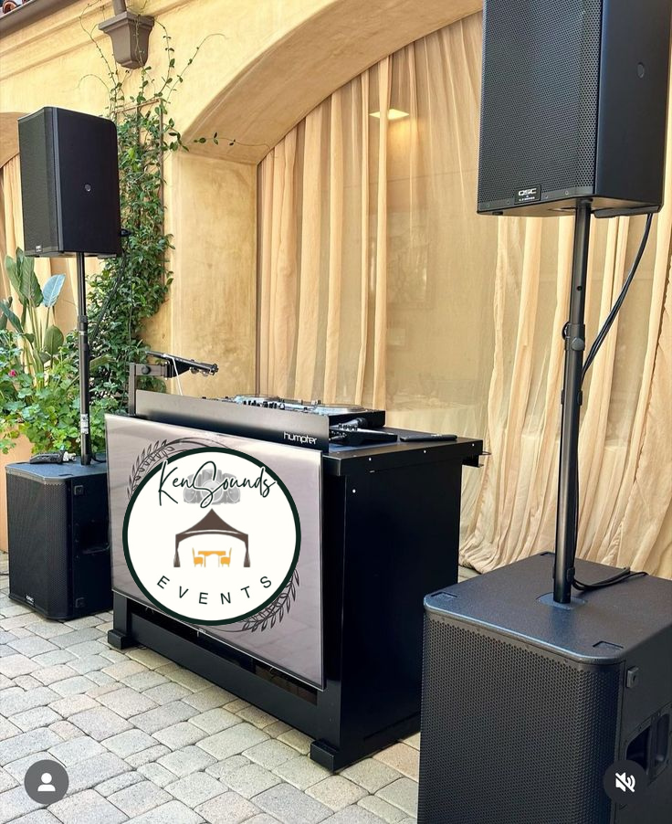
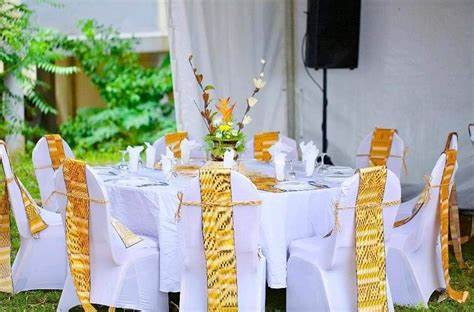

Welcome to KenSounds Events Ltd.Your Premier Event Partner!

At KenSounds Events, we specialize in creating unforgettable experiences for all types of events. Whether you're celebrating a milestone, hosting a corporate function, or planning a traditional gathering, we provide top-tier event services to ensure your special occasion runs smoothly and memorably.
Our Services
🎪 Tent Rental Services – We offer high-quality tents to suit any event size and style, providing comfort and elegance for your guests.
🔊 Public Address Systems – Ensure crystal-clear sound with our professional PA systems, perfect for speeches, live performances, and announcements.
🎧 Dee Jay Services – Keep the party alive with our skilled DJs, spinning the best music tailored to your event’s theme and audience.
🎯 Event Management – From planning to execution, we handle every detail, allowing you to enjoy your event stress-free.
Events we cover

Mega Weddings
Your wedding day is a once-in-a-lifetime celebration, and we are here to make it truly unforgettable! At KenSounds Events, we provide top-tier Public Address Systems, Breathtaking Décor, and Gourmet Catering to create a magical and seamless wedding experience.

🎤 Crystal-Clear Sound & Music – From the heartfelt vows to the lively reception, our state-of-the-art public address system ensures that every speech, toast, and musical note is heard with clarity. Our professional sound engineers create the perfect ambiance for your big day.
For a price range Ksh20,000 to ksh30,000 depending on the venue of the event. You get
-Four Ground Shakers Bass speakers
-Eight Mid-range speakers.
-Eight monitor speakers
-32 channel mixer, 4 wireless microphones, 4 Amplifiers
Dowry Payment, Traditional Weddings(Ruracio, Ntheo..)

Step into the rich heritage of African culture with a spectacular traditional dowry payment party, where love, family, and tradition come together in a grand celebration! Whether it's the rhythmic beats of cultural drumming, the soulful melodies of traditional songs, or the heartfelt speeches, our state-of-the-art public address system ensures every moment is heard loud and clear.
🎶 What We Offer:
✅ Crystal-Clear Public Address System – Perfect for speeches, music, and traditional performances.
✅ Professional Dee Jay Services – Blending traditional beats with modern sound for a lively atmosphere.
✅ Live Announcements & MC Support – Ensuring a smooth flow of events with expert sound control.
✅ Wireless Microphones & High-Quality Speakers – So every negotiation, blessing, and joyous cheer is captured.
From the entrance of the bride price negotiators to the final exchange of gifts and blessings, we bring clarity, energy, and excellence to your dowry celebration. This package comes at a range of ksh10,000 to ksh15,000.You get
-Two Ground Shakers Bass speakers
-Four Mid-range speakers.
-Four monitor speakers
-32 channel mixer, 4 wireless microphones, 2 Amplifiers